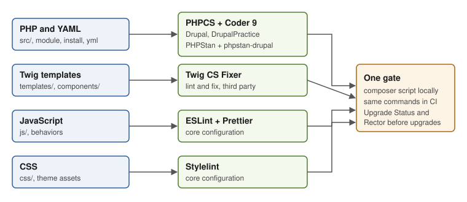

Drupal: Coding Standards and Static Analysis
|
This content was generated with the assistance of AI and should be verified against the official documentation before being relied on in production. |
Drupal has its own coding standards, a set of tools that enforce them and a second set that finds bugs and deprecated
API usage without running the code. This page explains the whole toolchain: where the standards live now, how
Coder 9 plugs the Drupal and DrupalPractice standards into PHP_CodeSniffer, how PHPStan with
mglaman/phpstan-drupal understands Drupal’s service container and entity API, how Upgrade Status and Drupal Rector
prepare a site for the next major version, how core’s ESLint, Prettier and Stylelint configurations are reused for
JavaScript and CSS, and how Twig templates are linted with Twig CS Fixer. Every tool is wired into one Composer script
that runs locally and in CI for the custom module meridian_collection of the Meridian Museum running example.
It was written against Drupal 11.4.x, with Drush 13 or 14 and PHP 8.3 or later, and the facts were checked against the official documentation and project pages on 2026-10-30. Drupal 12.0.0 is scheduled for the week of 2026-12-07 and the end of life of Drupal 10 for 2026-12-09, so both are described as upcoming. The PHP language side of these tools (PSR-12, PHPStan levels, baselines, Rector in general) is covered by PSR standards and coding style and Static analysis and refactoring; this page only adds what is specific to Drupal.
Who uses these tools
-
Developers run the checks in the editor, before a commit and in CI, and fix what they report.
-
Module and theme maintainers run them on every merge request, because drupal.org’s own pipelines do.
-
Administrators and release managers run Upgrade Status and Drupal Rector before a major upgrade (see Upgrading Drupal 10 to 11 and Preparing for Drupal 12).
-
Themers use the JavaScript, CSS and Twig tools (see Front-end tooling and Twig templates and debugging).

Where the standards live now
The coding standards used to be pages under drupal.org/docs/develop/standards. Those pages are marked deprecated and
state that the standards have moved. The current home is the Drupal Coding Standards project documentation, published
from the drupal/coding_standards repository at https://project.pages.drupalcode.org/coding_standards/. It is
described as version-independent and always current. Its sections are PHP, Accessibility, CSS, JavaScript, SQL, Twig,
Markup, Spelling, YAML and Composer.
Points that matter in daily work:
-
The PHP standard is described as loosely based on the PEAR standards, not on PSR-12. PSR-12 is cited only for visibility rules and for the order of
abstract,finalandstatic. A file that passesphpcs --standard=PSR12can therefore fail theDrupalstandard and the reverse. The visible differences are two-space indentation, short array syntax with spaces inside, required trailing commas in multi-line arrays,elseifrather thanelse if, and lowercase function names with underscores prefixed by the module name. -
Classes use UpperCamelCase, methods and properties lowerCamelCase without an underscore prefix for visibility, and constants are uppercase. Interfaces end in
Interface, traits inTraitand tests inTest. -
declare(strict_types=1);goes after the opening tag and file docblock, without spaces around=. -
The JavaScript standard builds on the Airbnb style guide through ESLint. Comments and names use US English spelling.
-
The Twig page still shows
{% apply spaceless %}; thespacelesstag was removed from core templates in 11.1, so do not add it to new templates.
Older books such as Drupal 10 Development Cookbook (2023) and Drupal 10 Masterclass (2023) point to the
drupal.org/docs/develop/standards pages and to the Coder module’s web UI ("Coder Review", "Coder Upgrade"), which
dates from the Drupal 7 era. For current projects use the command-line tools below; the old pages remain online but say
that they are deprecated.
Coder 9 and PHP_CodeSniffer
Coder (drupal/coder) is a Composer package of type phpcodesniffer-standard. It defines two PHP_CodeSniffer standards:
-
Drupalchecks formatting, naming, documentation comments and many pitfalls against the coding standards. -
DrupalPracticechecks best practices for module development, for example calling the\Drupalstatic class from a class that could receive the service by injection. It is meant for custom and contributed modules rather than for core code, which does not satisfy it everywhere.
Coder 9.0.1 was released on 2026-06-21 and is covered by the Drupal Security Team; the 8.3 line is the previous one.
Coder 9 requires PHP 7.4 or later, squizlabs/php_codesniffer 4, slevomat/coding-standard,
sirbrillig/phpcs-variable-analysis and dealerdirect/phpcodesniffer-composer-installer, which registers the standard
with PHPCS automatically. The JavaScript standard is not part of Coder; use ESLint instead (see below).
# Install as a development dependency of the project, not of the module
composer require --dev 'drupal/coder:^9.0'
# Check the custom module with both standards
vendor/bin/phpcs --standard=Drupal,DrupalPractice \
--extensions=php,module,inc,install,test,profile,theme,info,txt,md,yml \
web/modules/custom/meridian_collection
# Fix what can be fixed automatically
vendor/bin/phpcbf --standard=Drupal,DrupalPractice \
--extensions=php,module,inc,install,test,profile,theme,info,txt,md,yml \
web/modules/custom/meridian_collectionSource: Coder project page
The extension list matters: PHPCS ignores .module, .install and .yml files unless they are named. Coder’s own
documentation checks php, module, inc, install, test, profile, theme, info, txt, md and yml, while
core’s ruleset checks engine, inc, install, module, php, profile, test, theme and yml. Since the .module
file extension is on a deprecation path (see
Module anatomy and the info.yml file), keep the list in one place, the
ruleset file, instead of repeating it in scripts.
A project ruleset, phpcs.xml.dist
PHPCS reads phpcs.xml.dist from the working directory automatically, so the file doubles as the shared configuration
for editors, Git hooks and CI.
<?xml version="1.0"?>
<ruleset name="meridian">
<description>Coding standards for the Meridian Museum custom code.</description>
<file>web/modules/custom</file>
<file>web/themes/custom</file>
<file>recipes</file>
<exclude-pattern>*/node_modules/*</exclude-pattern>
<exclude-pattern>*/vendor/*</exclude-pattern>
<exclude-pattern>*/dist/*</exclude-pattern>
<arg name="extensions" value="php,module,inc,install,test,profile,theme,info,txt,md,yml"/>
<arg name="colors"/>
<arg value="sp"/>
<arg name="parallel" value="8"/>
<rule ref="Drupal"/>
<rule ref="DrupalPractice"/>
<!-- Example: the generated test fixtures are not hand-written. -->
<rule ref="Drupal.Commenting.FunctionComment.Missing">
<exclude-pattern>*/tests/fixtures/*</exclude-pattern>
</rule>
</ruleset>Source: Drupal core: core/phpcs.xml.dist
Core’s own core/phpcs.xml.dist is a useful model. It includes the Drupal and DrupalPractice standards together with
parts of Generic, PEAR, PSR-2, SlevomatCodingStandard, Squiz, VariableAnalysis and Zend, enables only sniffs that
already pass at the branch head so new sniffs do not break the build, and relaxes some documentation sniffs for tests.
Reading and suppressing a report
Each message has a source such as Drupal.Commenting.FunctionComment.Missing. Use -s (shown above as sp) to print
it. A single line can be silenced with a comment, which should always carry the reason:
<?php
declare(strict_types=1);
namespace Drupal\meridian_collection\Plugin\QueueWorker;
/**
* Syncs collection objects from the collections-management API.
*/
class ObjectSyncWorker {
public function legacyEndpoint(): string {
// phpcs:ignore Drupal.Semantics.FunctionT.NotLiteralString -- Value comes from the vendor API.
return (string) t($this->label);
}
}Source: Coder project page
Common pitfalls:
-
Running
phpcbfon a dirty working tree mixes formatting and logic changes. Run it on a clean branch and commit the result separately. -
DrupalPracticereports are advice. A report such as using\Drupal::service()in a class is almost always right in a custom module (inject the service instead, see Services and dependency injection), but it is a false positive in a procedural hook that must stay procedural, such ashook_install(). -
Do not edit files under
vendor/drupal/coder. Override sniffs with<rule ref="..."><severity>0</severity></rule>in the project ruleset. -
PHP attributes such as
#[Hook],#[Block]and#[ContentEntityType]are common in modern modules; the plugin and hook APIs that use them are explained in Plugin API and attributes and Hooks and OOP hooks.
PHPStan with mglaman/phpstan-drupal
PHPCS checks style; PHPStan checks meaning. Left alone, PHPStan cannot understand that \Drupal::service('...') returns
a particular class, that plugin classes are instantiated by the plugin manager, or that a .module file defines hooks.
The mglaman/phpstan-drupal extension teaches it Drupal: it finds the Drupal root with webflo/drupal-finder, loads
the extension and module files so functions resolve, and adds rules and type extensions for services, entity storage,
ContentEntityBase fields and render arrays. The extension’s type is phpstan-extension; it requires PHP 8.1 or
later and PHPStan 2.1 together with phpstan/phpstan-deprecation-rules. The project documents that Drupal 11.2 uses
PHPStan 2.0 and that the 1.x branch is supported until Drupal 10 loses security support, which is the release of Drupal 12.
composer require --dev phpstan/extension-installer mglaman/phpstan-drupal phpstan/phpstan-deprecation-rules
# Composer asks to allow the plugin; the answer is stored in composer.json:
composer config allow-plugins.phpstan/extension-installer trueWith phpstan/extension-installer the extension’s extension.neon and rules.neon are included automatically, so the
project file only needs paths and a level.
# phpstan.neon.dist
parameters:
level: 5
paths:
- web/modules/custom
- web/themes/custom
excludePaths:
- '*/node_modules/*'
- '*Test.php'
- '*TestBase.php'
drupal:
drupal_root: web
ignoreErrors:
# Entity query examples in the docs deliberately omit accessCheck() in a fixture.
-
message: '#accessCheck#'
path: web/modules/custom/meridian_collection/tests/fixtures/*Source: mglaman/phpstan-drupal on GitHub
Notes on this configuration:
-
Without the extension installer, include the files by hand under
includes:, as the project README describes (vendor/mglaman/phpstan-drupal/extension.neon, thenrules.neon). -
To run only deprecation checks, set
customRulesetUsed: trueand include the extension and the deprecation rules yourself. To turn the deprecation rules off under the extension installer, list them in theignorearray of theextra.phpstan/extension-installersection ofcomposer.json. -
Excluding
*Test.phpand*TestBase.phpkeeps test classes, which depend on test base classes incore/tests, out of production analysis. Analyse tests in a separate run if you want them covered. -
bleedingEdge.neonenables rules before they reach the default set in a minor release; the README names hook deprecation checks for.api.phpfiles as an example. Opt in knowingly: a minor update of the extension can add errors in a green project. -
The README also describes
TodoCommentWithIssueUrlRule, an opt-in rule for contributed projects whose merge request pipelines should flag@todocomments that point to the current issue. -
Core itself runs PHPStan at level 1 with a baseline file (
core/.phpstan-baseline.php) and a GitLab error formatter, so a high level is a goal for new code and not a requirement imposed by Drupal. Start a custom module at the level that passes and generate a baseline for existing findings (vendor/bin/phpstan analyse --generate-baseline); the PHP page on static analysis explains baselines in detail.
What it finds in practice for meridian_collection:
<?php
namespace Drupal\meridian_collection\Controller;
use Drupal\Core\Controller\ControllerBase;
class OnDisplayController extends ControllerBase {
public function list(): array {
// Reported: entity query without an explicit accessCheck().
$ids = $this->entityTypeManager()->getStorage('collection_object')
->getQuery()
->condition('on_display', 1)
->execute();
// Fix: ->accessCheck(TRUE) or ->accessCheck(FALSE) must be stated.
return ['#markup' => count($ids)];
}
}Source: Entity query API
Entity queries must call accessCheck() explicitly; the extension reports a missing call, which is also a security
review point (see Database API and entity queries). Deprecated API
usage is reported through phpstan-deprecation-rules, so running PHPStan after every minor update of core is the cheapest
way to see which calls will break in the next major version.
Upgrade Status
Upgrade Status (drupal/upgrade_status) is a module that answers one question: is this site ready for the next major
version? It checks that the current core has an upgrade path, that the server meets the requirements of the next major,
which contributed projects need a newer release (through the Update Status data), and it runs PHPStan, Twig, hook_theme(),
library, configuration-key, info.yml and composer.json checks on custom and contributed code. It reports problems and
suggests Drupal Rector for the ones that can be fixed automatically; it does not change code.
-
The project page lists 4.3.10 (2026-06-08) as the stable release, working with Drupal 9, 10 and 11, and 5.0.0-alpha3 (2026-07-02), working with Drupal 10.4, 11 and 12, with improved compatibility with Drupal 11.4 and 12.0. Check the project page for the current release before the Drupal 12 upgrade.
-
It is meant to be run on the current site against the next major version, for example on Drupal 11 to prepare for 12; most of its checks cannot work after the upgrade. It does not support skipping a major version.
-
Install it with Composer only, because of its PHP dependencies. The project page asks to add Drupal’s development dependencies (
drupal/core-dev) first, so that test code in scanned projects does not cause false errors, and to temporarily remove and re-add Drush when dependency conflicts appear.
composer require --dev drupal/core-dev
composer require --dev drupal/upgrade_status
ddev drush pm:install upgrade_status -y
# Analyse every installed custom and contributed project; the alias is us-a
ddev drush upgrade_status:analyze --all --format=checkstyle > upgrade-status.xml
# Analyse only the museum's own module
ddev drush upgrade_status:analyze meridian_collectionSource: Upgrade Status project page
The web interface is at Administration > Reports > Upgrade Status. The command accepts options such as --all,
--ignore-contrib, --phpstan-memory-limit and --format (plain text, Checkstyle XML or Code Climate JSON); the Code
Climate output is what GitLab CI uses for code-quality reports. Upgrade Status is a development tool: uninstall it and
remove it from production (composer remove drupal/upgrade_status), because the report pages expose paths and code
structure to anyone with the permission.
Drupal Rector
Drupal Rector (palantirnet/drupal-rector) is a set of Rector rules that rewrites deprecated Drupal API calls to their
replacements, based on the deprecation notices of core. It is the tool Upgrade Status points to for automatic fixes. The
project describes Drupal 10 and 11 as its primary targets, with deprecation coverage from 10.0 through 11.4, and still
includes rules for Drupal 8 and 9. Its 1.0.x line is a beta; the README does not mention Drupal 12 sets, so check the
project’s releases when preparing for 12.
composer require --dev palantirnet/drupal-rector
cp vendor/palantirnet/drupal-rector/rector.php .
# Always look first
vendor/bin/rector process web/modules/custom/meridian_collection --dry-run
# Then apply, review the diff and run the tests
vendor/bin/rector process web/modules/custom/meridian_collectionSource: Drupal Rector on GitHub
<?php
declare(strict_types=1);
use DrupalRector\Set\Drupal10SetList;
use Rector\Config\RectorConfig;
return static function (RectorConfig $rectorConfig): void {
// Limit the run to deprecations introduced up to Drupal 10.3.
$rectorConfig->sets([
Drupal10SetList::DRUPAL_103,
]);
};Source: Drupal Rector on GitHub
By default all Drupal versions' deprecations are fixed; listing sets limits the run. Newer, Composer-based sets read the
installed drupal/core version and load every set up to that minor, but they depend on a Rector release that ships the
Drupal set group, so read the README before relying on them. Hook conversion (HookConvertRector, which turns procedural
hooks into #[Hook] methods, see
Hooks and OOP hooks) is a separate second pass with its own configuration file
(rector-hook-convert.php), to be run only after the deprecation pass. The README also warns that projects pinned to
PHPStan 1 may conflict with rector/rector and need the standalone-runner recipe described in its documentation.
Pitfalls:
-
Rector rewrites code in place. Run it on a clean branch, one module at a time, and never against
vendororweb/core. -
Rector fixes API calls, not behaviour. Run the tests (see Automated testing) and review hook, plugin and entity changes by hand.
-
For a contributed module that supports several majors, Drupal Rector can wrap replacements in backward-compatibility code (
DrupalRectorSettings, off by default); a site’s custom module that targets only Drupal 11 should not.
JavaScript and CSS: core’s ESLint, Prettier and Stylelint
Drupal core ships the configuration for the JavaScript and CSS standards, and custom code reuses it. The authoritative
list is the scripts section of core/package.json: lint:core-js (ESLint across the repository),
lint:core-js-passing (quiet, using .eslintrc.passing.json), lint:css (Stylelint on **/*.css), lint:yaml
(ESLint on YAML files) and build:css (PostCSS). Its development dependencies include ESLint 8.57 with the Airbnb base
configuration, eslint-config-prettier, eslint-plugin-jsdoc, eslint-plugin-no-jquery, eslint-plugin-yml,
Stylelint 16 with stylelint-config-standard, stylelint-order and stylelint-prettier, and Prettier 3. The
package declares Yarn 4.1.1 or later and Node.js 20 or later.
The documented setup for a site (note that the page describing it is also marked deprecated, with the standards moved to the coding standards project) enables Corepack, installs core’s tools once and links them for custom code:
# .ddev/config.yaml: set corepack_enable: true, then
ddev restart
ddev yarn set version stable
cd web/core
ddev yarn install
# Lint and format the museum module's JavaScript
ddev yarn eslint ../modules/custom/meridian_collection/js
ddev yarn eslint --fix ../modules/custom/meridian_collection/js
# Lint the theme's CSS with core's Stylelint configuration
ddev yarn stylelint --config .stylelintrc.json "../themes/custom/meridian/css/**/*.css"Source: ESLint settings for Drupal
A module or theme can add its own .eslintrc.json that extends drupal and declares extra globals. ESLint merges every
configuration file in the directory tree, so a file in js/ adds to the one at the project root.
{
"extends": "drupal",
"globals": {
"Drupal": "readonly",
"drupalSettings": "readonly",
"once": "readonly"
},
"rules": {
"no-console": "error"
}
}Source: ESLint settings for Drupal
Version notes and pitfalls:
-
Core is on ESLint 8 with the
.eslintrcstyle. A newer ESLint 9 binary installed elsewhere in the project expects a flateslint.config.jsand will ignore these files; run the binary that core installed. -
The JavaScript standard requires behaviors that receive
context,once()instead of the jQuery.once()method that older pages still show, and no global variables. TheDrupal.settingsobject in some examples is the Drupal 7 name; usedrupalSettings. -
Compiled or minified assets in
dist/should be excluded with.eslintignoreorignorePatterns. -
Code components of Canvas are checked by Canvas’s own tooling (see Canvas visual page building), and Single Directory Components follow the standards for their
.js,.cssand.twigfiles (see Single Directory Components).
Twig CS Fixer
Twig templates have a Drupal standard (docblocks in {# #} comments, {{ attributes }} printed last, t and url
filters without spaces around the pipe, comments under 80 characters), but no PHPCS sniffs enforce it. Twig CS Fixer
(vincentlanglet/twig-cs-fixer) is a general third-party linter and fixer for Twig. It is not a Drupal project, it knows
nothing about Drupal’s template conventions, and the Drupal documentation does not mention it, so treat it as a
formatting tool rather than as the authority.
composer require --dev vincentlanglet/twig-cs-fixer
# Report problems
vendor/bin/twig-cs-fixer lint web/themes/custom/meridian/templates web/themes/custom/meridian/components
# Rewrite files in place
vendor/bin/twig-cs-fixer fix web/themes/custom/meridian/templates web/themes/custom/meridian/componentsSource: Twig CS Fixer on GitHub
The tool ships a default ruleset with the Twig coding-standard rules plus some extra rules, a Twig-only ruleset and a
Symfony-flavoured ruleset, and everything can be configured or extended with custom rules in a configuration file
(see its documentation for the file name and ignore syntax). Use a rule set that agrees with Drupal’s written Twig
standard, and review the first fix run, because it can reformat the many core-derived templates in a theme. Twig
lint at the syntax level, which catches template errors without a formatter, is a different check: compile all
templates by loading the pages in a test (see Twig templates and debugging).
Also remember that autoescaping is on in Drupal and that |raw on user input is a cross-site scripting risk; no
formatter detects it, so review it by hand (see Security hardening).
One gate for local work and CI
Define the commands once as Composer scripts and call the same scripts from Git hooks and from the pipeline. Local and CI results then match.
{
"scripts": {
"cs": "phpcs",
"cs:fix": "phpcbf",
"stan": "phpstan analyse --memory-limit=1G",
"twig": "twig-cs-fixer lint web/themes/custom/meridian",
"check": [
"@cs",
"@stan",
"@twig"
]
},
"require-dev": {
"drupal/coder": "^9.0",
"mglaman/phpstan-drupal": "^2.0",
"phpstan/extension-installer": "^1.4",
"phpstan/phpstan-deprecation-rules": "^2.0",
"vincentlanglet/twig-cs-fixer": "^3.0"
}
}Source: Composer: Scripts
The version constraints in the require-dev block are shown for orientation; take the current releases from Packagist.
# .gitlab-ci.yml (fragment): a plain job, independent of the shared templates
quality:
image: php:8.3-cli
script:
- composer install --no-interaction --prefer-dist
- composer check
rules:
- if: $CI_PIPELINE_SOURCE == "merge_request_event"Source: GitLab CI/CD YAML reference
Contributed projects on drupal.org do not write this by hand: the GitLab templates maintained for drupal.org run PHPCS with the Drupal standards, PHPStan, ESLint, Stylelint and a spell check on every merge request, which is why a contributed module should pass these tools before it is pushed (see Contributing and the Drupal community). For the museum’s own site, the Composer scripts above are added to the pipeline described in Deployment and CI/CD, and PHPUnit runs next to them (see PHPUnit and Pest).
Common errors and pitfalls
-
No sniffs found: PHPCS reports "Referenced sniff Drupal does not exist" when the Composer installer plugin was not allowed. Set
config.allow-plugins.dealerdirect/phpcodesniffer-composer-installertotrueand runcomposer installagain;vendor/bin/phpcs -imust listDrupalandDrupalPractice. -
PHPStan cannot find Drupal: the analysed paths must be inside a Composer-based project, or
drupal.drupal_rootmust be set. A module checked out on its own, outside a site, needs the site’s autoloader. -
Memory exhausted: analysing
web/coreorweb/modules/contribis slow and rarely useful; restrictpathsto custom code and raise--memory-limitif needed. -
Contributed code in the report: keep contributed code out of PHPCS and PHPStan. Upgrade Status is the tool that reports on contributed projects, and it reports on updates available, not on style.
-
Two PHPStan majors:
mglaman/phpstan-drupal2 needs PHPStan 2; Coder 9’s own development dependency on PHPStan 1 is a dev dependency of Coder and does not install in a project. A conflict with Drupal Rector is described above. -
Fixing style with a formatter and breaking blame: commit formatting separately and add the commit to
.git-blame-ignore-revs.
Version notes
-
Coding standards moved to
project.pages.drupalcode.org/coding_standards; thedrupal.org/docs/develop/standardspages are deprecated. -
Coder 9.0.1 (2026-06-21) is current and targets PHP_CodeSniffer 4; Coder 8.3 is the previous line.
-
PHPStan 2 is used from Drupal 11.2; the extension’s 1.x branch follows Drupal 10 support, which ends on 2026-12-09.
-
Upgrade Status 4.3 serves Drupal 9 to 11; the 5.0 alpha adds Drupal 12 and is the one to follow for the Drupal 12 release (week of 2026-12-07).
-
Plugin annotations are on a deprecation path since attributes arrived in 10.2, so the tools above report them and Rector can convert them; hooks became attribute-based classes in 11.1, and several hooks must stay procedural.
-
Older books show Coder as a module with a web UI and describe
Drupal.settings-era JavaScript; neither applies to Drupal 10 and later.